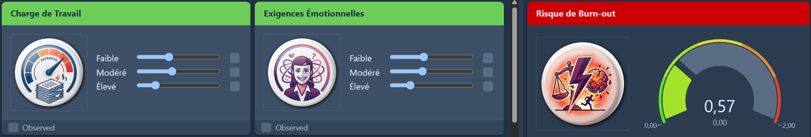
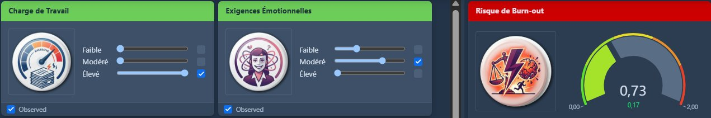

Méthode
Comment les modèles sont construits — et ce qu'on peut en attendre
Un réseau bayésien est une représentation graphique des relations entre variables : chaque nœud est un facteur, chaque flèche porte une hypothèse d'influence et une intensité estimée. Cette page explique comment ils sont construits, sur quoi ils reposent, et ce qu'ils ne font pas.
Le principe
Un réseau bayésien, en clair
Chaque nœud représente un facteur — charge de travail, soutien managérial, épuisement émotionnel, intention de départ. Les flèches expriment des hypothèses d'influence : « selon la littérature, A est un antécédent probable de B ». Ce n'est pas une causalité prouvée — c'est une hypothèse structurée, documentée, et discutable.
À chaque relation est associée une table de probabilités conditionnelles, estimée depuis les données ou la littérature. Le réseau répond alors à des questions du type : « si ce facteur change, qu'est-ce qui bouge, et de combien ? » — en tenant compte de toutes les variables simultanément.
Contrairement à un modèle statistique classique, chaque relation est visible et discutable. Si un lien semble inexact ou si une variable manque, on corrige la structure et on observe comment les résultats changent. C'est un outil de raisonnement, pas une boîte noire.
Le processus
Trois étapes, trois sources de connaissance
Structure
Les variables et leurs relations sont posées à partir de la littérature scientifique — méta-analyses, cadres validés, données publiques (DARES, COPSOQ). Elles sont ensuite discutées et ajustées avec vos équipes RH, qui apportent une connaissance du terrain qu'aucune donnée ne contient. La structure du modèle reflète ce croisement.
Calibration
Les paramètres du modèle sont d'abord estimés depuis la littérature, puis affinés avec vos données. Celles-ci peuvent prendre des formes variées : extraits SIRH, baromètres internes, enquêtes psychosociales existantes, ou questionnaires passés directement aux collaborateurs — chaque source alimente les paramètres du modèle de façon tracée. Quand les données internes sont insuffisantes, les paramètres issus de la littérature restent opérationnels — là où un modèle statistique classique serait bloqué.
Simulation et restitution
Une fois calibré, le modèle explore des scénarios : « si l'on agit sur X, qu'est-ce qui change sur Y ? » Les résultats sont exprimés en distributions de probabilités, avec une estimation explicite de l'incertitude — pas un chiffre unique. Vous recevez le modèle interactif et les résultats commentés, conçus pour être présentés en CODIR ou avec le CSE.
L'ensemble prend typiquement 4 à 8 semaines selon la disponibilité des données et les itérations nécessaires. Les données restent chez vous, le traitement respecte le RGPD, et les échanges sont couverts par un accord de confidentialité.
Positionnement
Ce que cette approche fait — et ce qu'elle ne remplace pas
Un algorithme de machine learning vise avant tout à maximiser la précision prédictive — parfois au détriment de la lisibilité. Un réseau bayésien peut aussi se prêter à la prédiction, mais ce n'est pas là que réside sa valeur principale. Ce qui le distingue : le raisonnement est visible et modifiable, et des scénarios d'action sont simulables.
Un consultant RH apporte de l'expérience et des grilles d'analyse éprouvées. La modélisation ne remplace pas cette expertise — elle l'outille : confronter des intuitions à des données, quantifier ce qui était qualitatif, rendre les arbitrages plus traçables.
Cette approche complète aussi les enquêtes internes et les tableaux de bord existants. Elle relie les variables qu'ils mesurent séparément pour passer du constat (« l'absentéisme a augmenté ») au diagnostic structuré (« voici les facteurs qui y contribuent le plus, et dans quel ordre probable »).
Fondements
Ce que chaque modèle doit à la recherche
La structure de chaque modèle repose sur des cadres de recherche publiés. Les hypothèses d'influence entre variables sont extraites de la littérature, documentées, et ouvertes à la discussion. Quelques références structurantes :
- Turnover volontaire — Rubenstein et al. (2018), méta-analyse des antécédents du turnover volontaire ; Mobley (1977), modèle de décision de départ ; Mitchell et al. (2001), théorie de l'encastrement (job embeddedness)
- Absentéisme et présentéisme — Miraglia & Johns (2016), méta-analyse des déterminants du présentéisme ; Aronsson et al., mécanismes de substitution absentéisme / présentéisme
- Risques psychosociaux — COPSOQ III (Copenhagen Psychosocial Questionnaire), cadre exigences-ressources ; données DARES (enquêtes nationales françaises sur les conditions de travail)
Chaque modèle publié sur la page Modèles cite ses sources et rend visible la façon dont la littérature a été traduite en structure de réseau. Pour la méthodologie bayésienne elle-même, les fondements formels sont établis de longue date ; Koller & Friedman, Probabilistic Graphical Models, en constitue la référence standard.
Les outils
BayesiaLab et WebSimulator
La construction et la calibration des modèles s'appuient sur BayesiaLab, logiciel de référence pour les réseaux bayésiens, utilisé en recherche et en industrie depuis plus de vingt ans. Noumensia travaille en lien étroit avec Bayesia, son éditeur — ce qui permet un accès privilégié aux développements méthodologiques récents.
Les modèles livrés sont rendus interactifs via WebSimulator — une interface navigateur qui permet de fixer des variables, de simuler des scénarios et d'observer comment les probabilités évoluent en temps réel, sans aucune compétence technique requise.
État de référence

Scénario simulé

Chaque modification d'une variable recalcule instantanément l'ensemble du réseau — aucune compétence technique requise.
Limites
Ce qu'un modèle ne fait pas
Un réseau bayésien ne prédit pas l'avenir avec certitude. Il produit une estimation conditionnelle — « si ces facteurs sont dans cet état, tel résultat est plus probable » — dont la qualité dépend des données et des hypothèses retenues. Un modèle construit sur des données biaisées ou des hypothèses fausses produira des résultats trompeurs, comme tout outil quantitatif.
Le modèle ne remplace pas la connaissance terrain de vos équipes. Il la structure et la quantifie, pour que les arbitrages reposent sur une base plus explicite et traçable.
Point de vocabulaire important : une flèche de A vers B signifie que l'hypothèse « A influence B » a été jugée plausible d'après la littérature ou les données. Ce n'est pas une preuve de causalité au sens expérimental. La simulation de scénarios exploite cette structure pour raisonner sur des leviers probables — pas pour prédire des effets garantis. Cette distinction fait partie de chaque restitution.